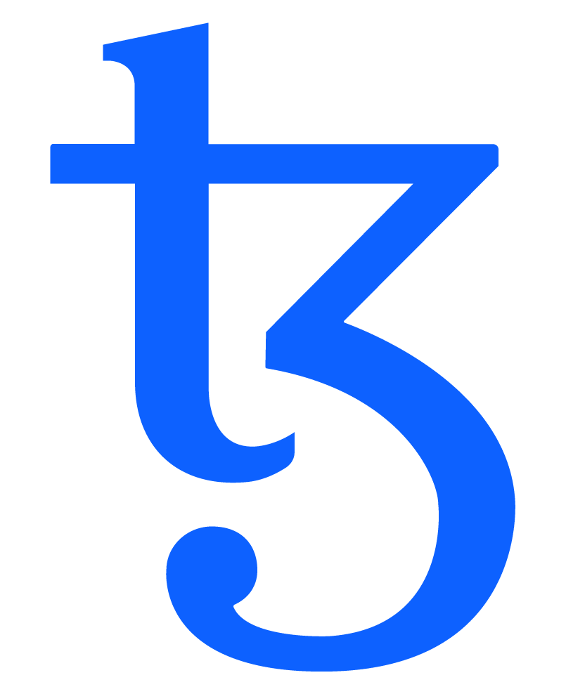

<!doctype html>
<html>
	<head>
		<meta charset="utf-8">
		<meta name="viewport" content="width=device-width, initial-scale=1.0, maximum-scale=1.0, user-scalable=no">

		<title>Formal verification of smart contracts for Tezos</title>

		<link rel="stylesheet" href="dist/reset.css">
		<link rel="stylesheet" href="dist/theme/white.css">
		<link rel="stylesheet" href="dist/reveal.css">

		<link rel="shortcut icon" type="image/jpg" href="rooster.png" />

		<!-- Theme used for syntax highlighted code -->
		<link rel="stylesheet" href="plugin/highlight/monokai.css">
	</head>
	<body>
		<div class="reveal">
			<div class="slides">
				<section data-markdown>
					<script type="text/template">
						# Formal verification of smart contracts for Tezos
						
					</script>
				</section>
				<section data-markdown>
					<script type="text/template">
						## Me
						* Guillaume Claret
						* Have been working for two three years for the Tezos project
						* Part of the company <a href="https://formal.land/">Formal Land</a> to make formal verification of code
						* `guillaume.claret@formal.land`
					</script>
				</section>
				<section data-markdown>
					<script type="text/template">
						## Formal Land
						<br />
						* Verifying the protocol code of Tezos in OCaml
						* Project: <a href="https://formal-land.gitlab.io/coq-tezos-of-ocaml/">coq-tezos-of-ocaml</a>
						* 100,000 lines of OCaml (code of Tezos)
						* 50,000 lines of Coq (verification language)
					</script>
				</section>
				<section data-markdown>
					<script type="text/template">
						## Formal verification
						Use mathematical methods to show that a program is correct for all possible inputs.

						<!-- * Extends unit testing by covering all possible cases.
						* Hope to have perfect programs. -->
					</script>
				</section>
				<section data-markdown>
					<script type="text/template">
						## Link with tests
						Definition:
						<pre><code data-trim data-noescape class="language-javascript">
							function square(x) {
								return x * x;
							}
						</code></pre>
						Test:
						<pre><code data-trim data-noescape class="language-javascript">
							function test_square() {
								assert(square(2) >= 0);
								assert(square(3) >= 0);
							}
						</code></pre>
						Theorem:
						<pre><code data-trim data-noescape class="language-coq">
							Lemma square_positive: forall x, square x >= 0.
						</code></pre>
					</script>
				</section>
				<section data-markdown>
					<script type="text/template">
						## Formal verification
						Hope to have code without bugs.
					</script>
				</section>
				<section data-markdown>
					<script type="text/template">
						## Pros/cons
						* Pro: highest possible level of reliability
						* Cons:
							* takes time
							* requires specific knowledge
							* we need to know the specification
					</script>
				</section>
				<section data-markdown>
					<script type="text/template">
						## For smart contracts
						Why it matters?
						* Immutable and open-source code
						* Attacks to steal money
						* Example: DAO hack on Ethereum ($50 millions)
					</script>
				</section>
				<section data-markdown>
					<script type="text/template">
						## What to verify 
						* Individual contract
						* Interaction with other contracts
						* Interaction with other code (dApp)
					</script>
				</section>
				<section data-markdown>
					<script type="text/template">
						## Verification in Tezos
						* Michelson: <a href="https://gitlab.com/nomadic-labs/mi-cho-coq">Mi-Cho-Coq</a> (Coq)
						* <a href="https://archetype-lang.org/">Archetype</a> (Why3)
						* OCaml code: with Ligo and <a href="https://github.com/formal-land/coq-of-ocaml">coq-of-ocaml</a> (Coq)
					</script>
				</section>
				<section data-markdown>
					<script type="text/template">
						## Mi-Cho-Coq
						* <a href="https://gitlab.com/nomadic-labs/mi-cho-coq">gitlab.com/nomadic-labs/mi-cho-coq</a>
						* Implementation of Michelson in Coq
						* Made at Nomadic Labs
					</script>
				</section>
				<section data-markdown>
					<script type="text/template">
						## Coq
						* Manual verification tool
						* Very expressive
						* Requires learning

						<br />
					</script>
				</section>
				<section data-markdown>
					<script type="text/template">
						## Mi-Cho-Coq

						Can embed Michelson programs:

						<pre><code data-trim data-noescape class="language-coq">
							Definition vote : full_contract _ ST.self_type storage_ty :=
								(
									AMOUNT ;;
									PUSH mutez (5000000 ~mutez);;
									COMPARE;; GT;;
									IF ( FAIL ) ( NOOP );;
									DUP;; DIP1 ( CDR;; DUP );; CAR;; DUP;;
									DIP1 (
									GET (i := get_map string int);; ASSERT_SOME;;
									PUSH int (Int_constant 1%Z);; ADD (s := add_int_int);; SOME
									);;
									UPDATE (i := Mk_update string (option int) (map string int) (Update_variant_map string int));;
									NIL operation;; PAIR 
								).
						</code></pre>

						Example from the <a href="https://opentezos.com/formal-verification/modeling-theorem">Open Tezos</a> documentation
					</script>
				</section>
				<section data-markdown>
					<script type="text/template">
						## Michelson level
						* Handle any contract
						* Sometimes low-level
					</script>
				</section>
				<section data-markdown>
					<script type="text/template">
						## Specification

						Written in Coq:

						<pre><code data-trim data-noescape class="language-coq">
Definition vote_spec
           (storage: data storage_ty)
           (param : data parameter_ty)
           (new_storage : data storage_ty)
           (returned_operations : data (list operation)) :=
  (* Pre-conditions *)
  (Z.ge (tez.to_Z (amount env)) 5000000) /\
  mem _ _ (Mem_variant_map _ int) param storage /\
  (* Post-condition *)
  (forall s, (mem _ _ (Mem_variant_map _ int) s storage) <->
        (mem _ _ (Mem_variant_map _ int) s new_storage)).
						</code></pre>
					</script>
				</section>
				<section data-markdown>
					<script type="text/template">
						## Proof

						Also to write in Coq:

						<pre><code data-trim data-noescape class="language-coq">
Proof.
	intro Hfuel. unfold ">=" in Hfuel.
	unfold eval.
	rewrite return_precond.
	rewrite eval_precond_correct.
	do 15 (more_fuel; simpl).
	rewrite if_false_not.
	apply and_both_0.
	- change (tez.compare (5000000 ~Mutez) (amount env)) with
				(5000000 ?= (tez.to_Z (amount env)))%Z.
		rewrite Z.compare_antisym.
	(* ... continued ... *)
						</code></pre>
					</script>
				</section>
				<section data-markdown>
					<script type="text/template">
						## Current examples
						* In <a href="https://gitlab.com/nomadic-labs/mi-cho-coq/-/tree/dev/src/contracts_coq">src/contracts_coq</a>
						* Ongoing work to verify an FA2 contract in Ligo: <a href="https://gitlab.com/nomadic-labs/mi-cho-coq/-/merge_requests/153">merge request</a>
					</script>
				</section>
				<section data-markdown>
					<script type="text/template">
						## Archetype language
						* <a href="https://archetype-lang.org/">archetype-lang.org</a>
						* Smart contract language created from use cases
					</script>
				</section>
				<section data-markdown>
					<script type="text/template">
						## Verification
						* Includes a specification language
						* Automated proofs with <a href="https://why3.lri.fr/">Why3</a>
						* May fail but easier to run
					</script>
				</section>
				<section data-markdown>
					<script type="text/template">
						## Example
						<a href="https://medium.com/coinmonks/verify-a-smart-contract-with-archetype-6e0ea548e2da">Medium post</a> from the authors:
						<pre><code data-trim data-noescape class="language-coq">
action consume (ow : address) (qty : int) {
  specification {
      postcondition p1 {
          mile.sum(the.quantity) = before.mile.sum(the.quantity) - qty
          invariant for loop {
              mile.sum(the.quantity) = 
                  before.mile.sum(the.quantity) - qty + remainder;
              0 <= remainder <= toiterate.sum(the.quantity)
          }
      }
  }
						</code></pre>
						* Invariant: manual input
						* Proof: automated
					</script>
				</section>
				<section data-markdown>
					<script type="text/template">
						## In OCaml
						* Possibility to write smart contracts in OCaml
						* Uses Ligo (Marigold) and <a href="https://gitlab.com/functori/dev/mligo">mligo</a> (Functori)
						* Run <a href="https://github.com/formal-land/coq-of-ocaml">coq-of-ocaml</a> to translate to Coq
					</script>
				</section>
				<section data-markdown>
					<script type="text/template">
						## Example
						* Project <a href="https://gitlab.com/formal-land/coq-of-mligo">coq-of-mligo</a>
						* FA1 contract
					</script>
				</section>
				<section data-markdown>
					<script type="text/template">
						## Status
						* Work in progress (but one example)
						* Proof on a high-level language (close to Ligo)
						* Goal of having a repository of verified smart contracts
					</script>
				</section>
				<section data-markdown>
					<script type="text/template">
						## Other projects
						* Verification of the Ligo compiler
						* Verification of the SmartPy compiler
						* Verification of Mi-Cho-Coq (comparing it to the Tezos implementation)
					</script>
				</section>
				<section data-markdown>
					<script type="text/template">
						## Thanks
					</script>
				</section>
				<section data-markdown>
					<script type="text/template">
						## Questions?
					</script>
				</section>
				
				<!-- <section data-markdown>
					<script type="text/template">
						## Translation to a proof system
						* done as the code evolves
						* forces to have stricter coding practices
						* we can formally verify the code
					</script>
				</section>
				<section data-markdown>
					<script type="text/template">
						## Our tool
						* coq-of-ocaml
						* <a href="https://github.com/foobar-land/coq-of-ocaml">github.com/foobar-land/coq-of-ocaml</a>
						* translate OCaml to Coq
						* MIT license
					</script>
				</section>
				<section data-markdown>
					<script type="text/template">
						## Similar
						The generated code should look like the original one:<br />
						OCaml
						<pre><code data-trim data-noescape>
							type 'a tree =
							| Leaf of 'a
							| Node of 'a tree * 'a tree
								</code></pre>
						Coq
						<pre><code data-trim data-noescape>
							Inductive tree (a : Set) : Set :=
							| Leaf : a -> tree a
							| Node : tree a -> tree a -> tree a.

							Arguments Leaf {_}.
							Arguments Node {_}.
								</code></pre>
					</script>
				</section>
				<section data-markdown>
					<script type="text/template">
						## Similar
						OCaml
						<pre><code data-trim data-noescape>
							let rec sum tree =
							  match tree with
							  | Leaf n -> n
							  | Node (tree1, tree2) -> sum tree1 + sum tree2
								</code></pre>
						Coq
						<pre><code data-trim data-noescape>
							Fixpoint sum (tree : tree int) : int :=
							  match tree with
							  | Leaf n => n
							  | Node tree1 tree2 =>
							    Int.add (sum tree1) (sum tree2)
							  end.
								</code></pre>
					</script>
				</section>
				<section data-markdown>
					<script type="text/template">
						## Automated
						* can run in a CI system
						* be easy to fix
						* can handle a lot of code (50,000 lines of OCaml for the protocol of Tezos)
					</script>
				</section>
				<section data-markdown>
					<script type="text/template">
						## "Isomorphic" development
						We maintain the same in two different languages.
					</script>
				</section>
				<section data-markdown>
					<script type="text/template">
						## Example
						The protocol of Tezos.<br />
						The Coq translation:<br />
						<a href="https://nomadic-labs.gitlab.io/coq-tezos-of-ocaml/">nomadic-labs.gitlab.io/coq-tezos-of-ocaml/</a>
					</script>
				</section>
				<section data-markdown>
					<script type="text/template">
						## Use cases
						* specifications: <a href="https://nomadic-labs.gitlab.io/coq-tezos-of-ocaml/docs/proofs/receipt_repr#Balance">Receipt_repr.balance</a>
						* symbolic proofs: <a href="https://nomadic-labs.gitlab.io/coq-tezos-of-ocaml/docs/proofs/receipt_repr#is_not_zero_true">Receipt_repr.is_not_zero_true</a>
						* automated proofs: <a href="https://nomadic-labs.gitlab.io/coq-tezos-of-ocaml/docs/proofs/receipt_repr#balance_encoding_is_valid">Receipt_repr.balance_encoding_is_valid</a>
						* brute-force proofs: <a href="https://nomadic-labs.gitlab.io/coq-tezos-of-ocaml/docs/proofs/script_comparable">Script_comparable.v</a>
						* unit tests: <a href="https://nomadic-labs.gitlab.io/coq-tezos-of-ocaml/docs/environment/proofs/pervasives#land_test">Pervasives.v</a>
					</script>
				</section>
				<section data-markdown>
					<script type="text/template">
						## When there are errors
						* we can suggest changes
						* for bugs or to simplify proofs
						* we maintain a fork <a href="https://gitlab.com/tezos/tezos/-/merge_requests/3303">gitlab.com/tezos/tezos/-/merge_requests/3303</a>
						* almost no errors for now
					</script>
				</section>
				<section data-markdown>
					<script type="text/template">
						## What we plan to work on
						* data-encoding
						* smart-contract interpreter
						* storage system
					</script>
				</section>
				<section data-markdown>
					<script type="text/template">
						## Future work
						* import the property-based tests
						* in OCaml: boolean function <code>p</code> with randomly generated inputs
						* in Coq: theorem:<br /> <code>forall x, p x = true</code>
					</script>
				</section>
				<section data-markdown>
					<script type="text/template">
						# Thanks
					</script>
				</section>

				<section data-markdown>
					<script type="text/template">
						## Additional slides
					</script>
				</section>
				<section data-markdown>
					<script type="text/template">
						## What we support ✔️
						* functional core (functions, `let`, `match`, ...)
						* type definitions
						* monadic programs
						* modules, functors, first-class modules
						* `.ml` and `.mli` files
					</script>
				</section>
				<section data-markdown>
					<script type="text/template">
						## What we partially support 🌊
						* GADTs
						* polymorphic variants
						* extensible types
					</script>
				</section>
				<section data-markdown>
					<script type="text/template">
						## What we do not support ❌
						* side-effects
						* object-oriented programming
					</script>
				</section>-->
			</div>
		</div>

		<script src="dist/reveal.js"></script>
		<script src="plugin/notes/notes.js"></script>
		<script src="plugin/markdown/markdown.js"></script>
		<script src="plugin/highlight/highlight.js"></script>
		<script>
			// More info about initialization & config:
			// - https://revealjs.com/initialization/
			// - https://revealjs.com/config/
			Reveal.initialize({
				hash: true,

				// Learn about plugins: https://revealjs.com/plugins/
				plugins: [ RevealMarkdown, RevealHighlight, RevealNotes ]
			});
		</script>
	</body>
</html>
